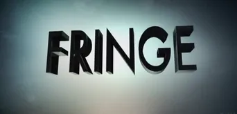

The genetics
The episode is built around a laboratory-made chimera, an animal assembled from the genetic traits of several species. Walter Bishop, the series' scientist, admits he once attempted the same thing, and the creature turns out to be based on a colleague's research, so the episode continues Fringe's theme of scientists facing the consequences of past experiments. It also touches on animal research: the creature is released by activists breaking into a testing lab run by the father of one of them. The monster is pure fiction: combining whole body plans from reptiles, mammals and insects is far beyond any real technique. In real biology, a chimera is a single organism made of cells with different genotypes, for example from the fusion of two embryos, and artificial chimeras are produced for research rather than to combine features into a new predator.
How genetics is portrayed
- Overall portrayal of genetics
- negative The episode continues Fringe's theme of scientists facing the monstrous consequences of genetic experiments, here a lab-made predator; Walter's heroism lies in atoning for and destroying such work, not in practising it.
- Outcome of the genetic intervention
- negative The escaped chimera kills the activists and an animal-control team and implants lethal larvae in Charlie, who is saved only after the creature is killed.
- Jonathan Swift's father (animal-testing scientist), building on a peer of Walter's
- neutral Aim: not stated (not applicable). The animal-testing scientist whose lab the activists raid made the multi-species chimera from a colleague's research; he is never shown and no reason is given, so the episode gives him no direct moral framing.
- Walter Bishop
- hero Aim: not stated (not applicable). Walter admits he once tried to build such a chimera; feeling responsible, he confronts and kills the creature in the storm drains and uses its blood to save Charlie, staged as his 'triumphant' heroic moment.
The story
Animal rights activists break into a laboratory and unwittingly release a creature, which follows them and kills them. The Fringe team, Olivia Dunham, Charlie Francis, Phillip Broyles and the Bishops, find marks from several different animals on the bodies, and a team of animal control workers is later killed too. When Charlie is attacked, Walter concludes that the creature is a man-made chimera combining traits of several species, including a lizard, a bat and a wasp. He had once tried to create such an animal without success, and the team learns that the creature was based on the work of one of his peers. One of the dead activists was the son of a scientist who carries out animal testing and had broken into his father's laboratory. The chimera has injected larvae into Charlie, who has less than a day to live. Walter, feeling responsible, confronts the creature alone in the storm drains and kills it, and its blood is used to cure Charlie.